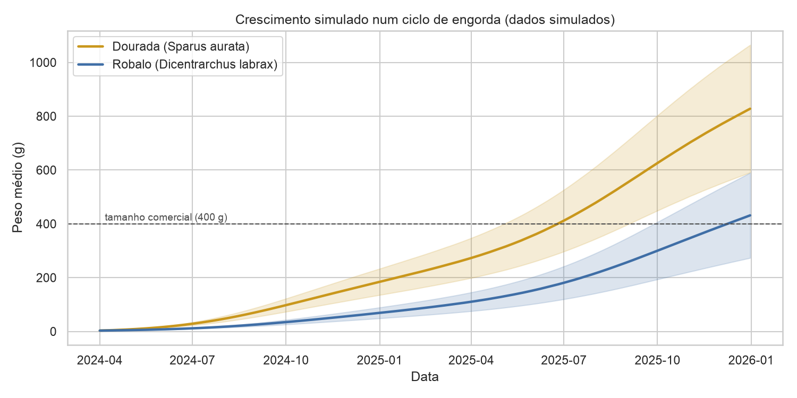

Quanto tempo demoram a dourada e o robalo a chegar ao tamanho comercial, e quanta ração gastam pelo caminho? Simulação do ciclo de engorda com parâmetros publicados, em jaula no mar ou em tanque / RAS.
A carregar o modelo, que corre em Python no próprio browser. Na primeira visita demora 30 a 60 segundos; as seguintes são mais rápidas.

Dinis Costa · Mestrado em Biologia Marinha Aplicada · LinkedIn · Código e notebooks no GitHub